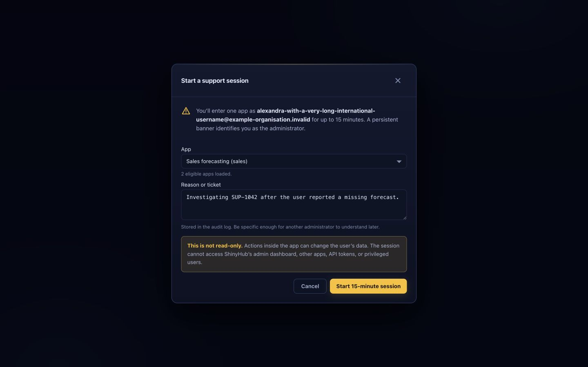
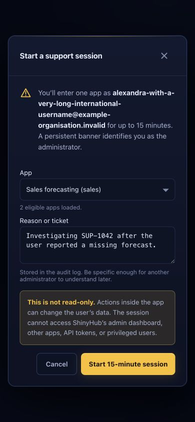
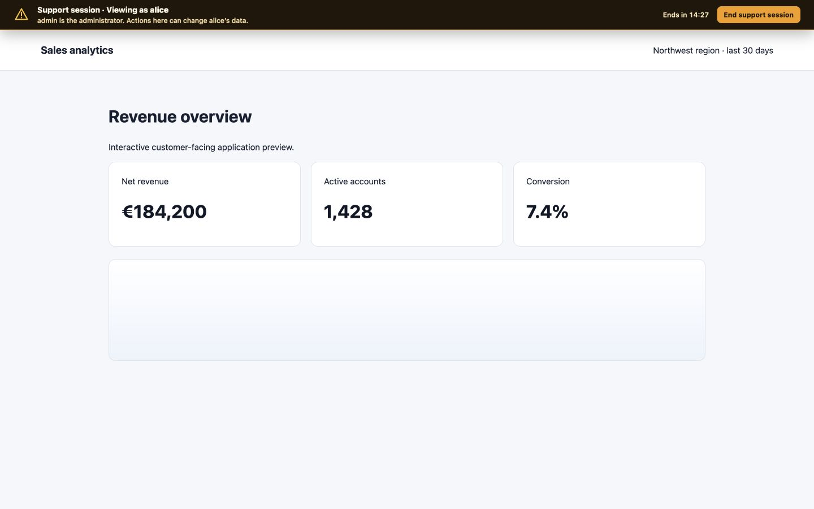
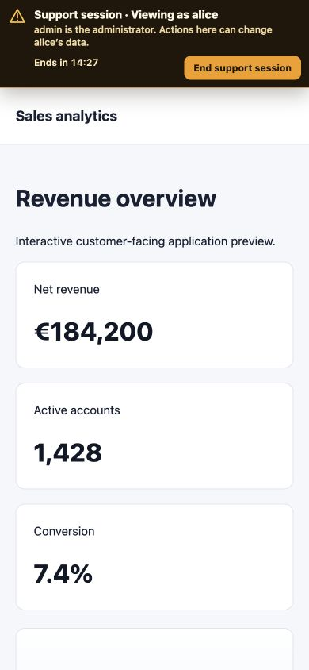

01
Bounded authority
The support identity works only under /app/<slug>/. It cannot enter the dashboard, another app, or the API.
A deliberately narrower alternative to global impersonation. Human administrators can reproduce one eligible user’s experience inside one app for 15 minutes, with dual-principal identity, a mandatory audit reason, a persistent warning rail, and immediate revocation.
The support identity works only under /app/<slug>/. It cannot enter the dashboard, another app, or the API.
Sessions are short-lived and non-renewable. The actor, subject, token epoch, access, revocation, and expiry remain live-checked.
The app receives the represented user plus explicit support-session and administrator identity. Audit records preserve both sides.
| Risk | Control | Result |
|---|---|---|
| Silent, broad impersonation | Feature defaults off; requires isolated server.app_origin; immutable app ID and slug are embedded in the token, with a path-scoped cookie. | App only |
| Privileged or machine target | Only human viewers and developers are eligible. Self, admin, operator, and service-account targets are rejected. | Blocked |
| Stolen long-lived admin session | Native authentication must be at most ten minutes old. API keys are not accepted; forward-auth delegates freshness upstream. | Re-auth bound |
| Capability replay | The launch secret is random, stored only as a hash, valid for 60 seconds, and atomically consumed once. | One use |
| Identity fallback outside the app | The ordinary app-origin cookie is cleared and a root guard prevents fallback to a normal or forward-auth administrator identity. | Fail closed |
| Browser host aliases collapse origins | IDNA, IPv6, case, port, and root-dot forms are canonicalized consistently; ambiguous numeric IPv4 forms are rejected. | One boundary |
| Cluster routes a replacement to old code | Every backend carries its immutable owner app ID. Publishing a replacement ID fences old replicas and elastic bindings, delayed old registrations are rejected, and HTTP plus WebSocket admission compare the selected backend. | Backend bound |
| Invisible support state | A closed-shadow-root amber rail lives outside SPA-managed body flow, self-heals after ordinary body rewrites/removal, identifies both principals, warns about writes, and exposes stop. | Persistent rail |
| App CSP prevents safe exit | The exit is a native same-origin POST form, so connect-src 'none' cannot disable it. Duplicate script directives, blocked forms, restrictive sandboxing, meta policies, or an uninjected rail produce ShinyHub's static 409 pause page. | App withheld |
| Role/access changes during use | HTTP and WebSocket paths recheck actor role/epoch, subject state/epoch, access, revocation, and expiry. | Live revoke |
| Confused or missing auditing | The transactional start event records actor, subject, app, reason, source IP, and deadline. Explicit stops also record request IP; aborted and lazily reaped transitions record cause without falsely attributing a client IP. Natural expiry is enforced from the audited start deadline. | Atomic |




| Gate | Coverage | Status |
|---|---|---|
| Go package suite | All packages: database migrations/lifecycle, authentication, API authorization, app-origin launch/stop, access/recheck, proxy injection, identity forwarding, configuration, and existing packages. | Pass |
| Race detector | Deadline close, early timer cancellation, and close idempotency passed 60 consecutive runs under go test -race. | Pass |
| JavaScript suite | 761 tests, including the full revealed-view WCAG A/AA axe gate, native support-session exit, rail self-healing, request ordering, generation-safe requests, and fresh-auth draft recovery. | 761 / 761 |
| Static checks | go vet, node --check, Go formatting, and git diff --check. | Pass |
| Responsive visual QA | Modal and in-app rail at 1440 × 900 and 390 × 844, reviewed against actual production CSS/script assets; mobile controls measured 44 px and neither viewport overflowed horizontally. | Pass |
| Reviewer | Adversarial focus | Outcome |
|---|---|---|
| Security | Origin isolation, replay, role/epoch drift, guard cookies, backend ownership and generation fencing, CSP/Trusted Types, WebSocket expiry, and audit integrity. | 7 passes · PASS |
| Correctness | Concurrent starts/stops, immutable app identity, launch crash windows, database errors, token revocation, timers, backend replacement, and race detection. | 5 passes · PASS |
| UX & accessibility | Strict-CSP exit, no-JavaScript safety, keyboard/focus and ARIA behavior, stale-auth recovery, async app selection, mobile targets, and WCAG checks. | 8 passes · PASS |
auth.support_sessions: true (or SHINYHUB_SUPPORT_SESSIONS=true) and configure an HTTPS server.app_origin. Existing installations remain unchanged until both conditions are satisfied.internal/api/support_sessions.go — creation policy and auditinternal/db/support_sessions.go — durable lifecycle and revocationinternal/auth/* — dual-principal claims and cookie isolationcmd/shinyhub/app_origin.go — one-time launch and stop endpointinternal/access/* — admission and live recheckinternal/proxy/* — banner injection, CSP fail-closed behavior, WebSocketsinternal/identity/* — actor/subject headers and token claimsinternal/supportui/* — persistent rail and static fallbackinternal/ui/static/* — administrator workflowdocs/support-sessions.md — operations and threat model